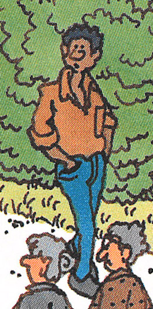
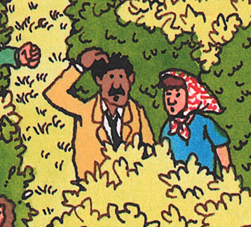
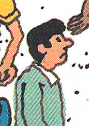

Where's Waldo: Scene 10 - Safari Park
## TODO
- more people added at bottom edge
- arm direction and placement for kid in red hat
1993 Mini Edition
Gameplay Changes
- Wenda, Woof, and Waldo Watchers were added
Cosmetic Changes
By the early 90s additional artwork had been added underneath the postcard, so the scene could be used
outside the context of the book (posters, puzzles, etc.):
A small tuft of green grass was added as part of the under-the-postcard scene can be seen in the 1993 edition,
above the yellow car:
1997 Special Edition
Gameplay Changes
- The locations of Waldo and his missing item were changed
- CONFIRM? Woof's location was changed
- Wizard Whitebeard and Odlaw were added
- The key, camera, bone, scroll, and binoculars were added
- The mystery character was added
- CONFIRM? More Waldo Watchers were added
2012 Deluxe Edition
Political Correctness
This scruffy character was cleaned up. He got a chin lift, and his arms were shortened:
This smoker had his pipe removed:
This pudgy character was slimmed, and his hooked nose was redrawn:
This woman got a chin lift:
This person's face was redrawn:

Diversity
This man was changed to a woman:
Several characters were changed to different races:



Postcard Text
The postcard text has been tweaked over the years:
1987
"Watch it, Waldo hunters! I'm an animal lover, that's for sure. I love that hippo with its alarm clock; that
lion having its mane combed; the hat-eating giraffe; the owls in spectacles. Great! Now track me down, if you
dare."
1997
"Watch it, Waldo hunters! I'm an animal lover, that's for sure. I love that hippo with its alarm clock; that
lion having its mane combed; the hat-eating giraffe; the owls in spectacles. Great!"
2017
"Watch out, Waldo-hunters! I love all animals—that's for sure. I love that hippo with its alarm clock, that lion
having its mane combed, that hat-eating giraffe, those owls in sunglasses. Great!"